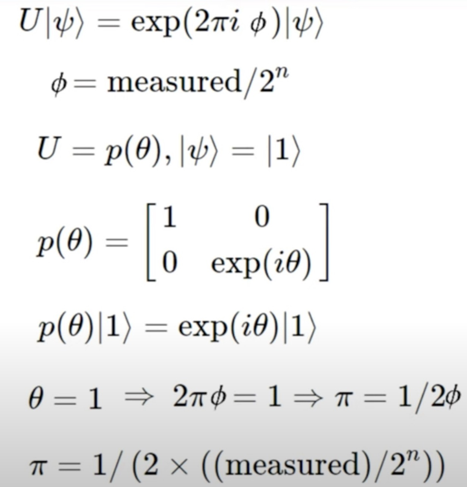
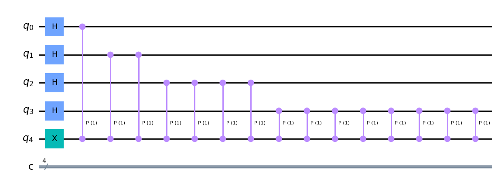
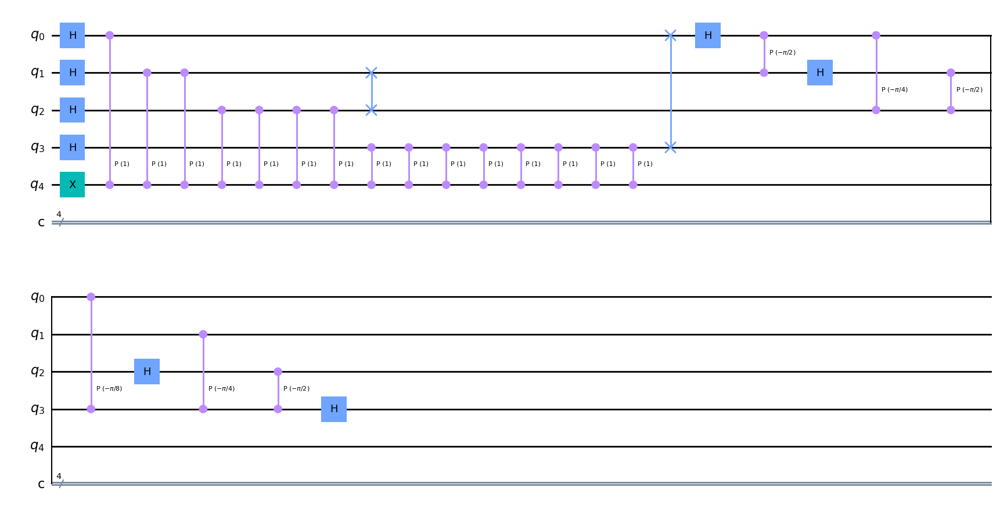
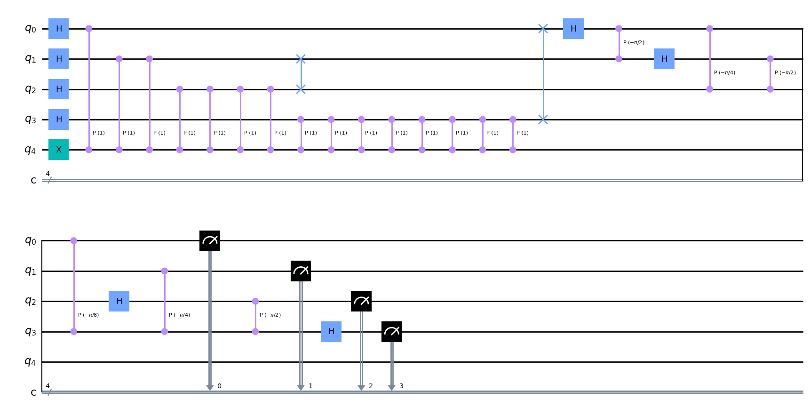
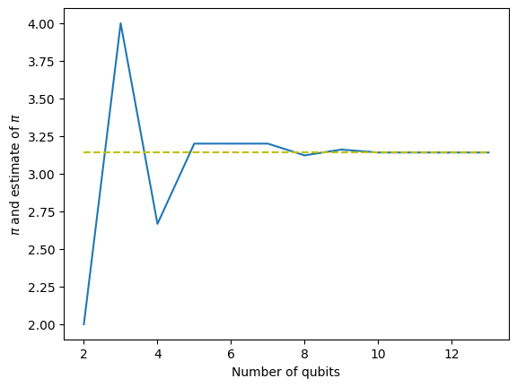

import math
from qiskit import QuantumCircuit
from qiskit import Aer, execute
from qiskit.visualization import plot_histogramApproximating pi has roots in QFT and QPE, a good application for both the concepts.
Resources used : https://www.youtube.com/watch?v=5kcoaanYyZw&t=622s; and https://www.youtube.com/watch?v=YpcT8u2a2jcm
The basic step by step process

Build the first part of QPE before the Inverse QFT, it involves a series of Hadamard and Unitary
n = 4
circuit = QuantumCircuit(n + 1, n)def qpe_initial(circuit, n):
circuit.h(range(n))
circuit.x(n)
for x in reversed(range(n)):
for a in range(2**(n-1-x)):
circuit.cp(1, n-1-x, n)
return circuittest = qpe_initial(circuit, n)
test.draw('mpl')
Inverse QFT
def iqft(circuit, n):
for q in range(int(n/2)):
circuit.swap(q, n-q-1)
for j in range(0,n):
for m in range(j):
circuit.cp(-math.pi/float(2**(j-m)), m, j)
circuit.h(j)
return circuittest = iqft(test, n)
test.draw('mpl')
test.measure(range(n), range(n))<qiskit.circuit.instructionset.InstructionSet at 0x7fbdab490e20>test.draw('mpl')
simulator = Aer.get_backend('qasm_simulator')
counts = execute(test, backend=simulator, shots=10000).result().get_counts()counts{'1011': 46,
'1001': 44,
'0101': 166,
'1110': 71,
'0000': 175,
'1111': 93,
'1101': 50,
'1010': 45,
'1000': 39,
'0100': 478,
'1100': 58,
'0111': 63,
'0011': 4926,
'0001': 453,
'0110': 102,
'0010': 3191}max_counts_result = max(counts, key=counts.get)
max_counts_result'0011'max_counts_result = int(max_counts_result, 2)
max_counts_result3theta = max_counts_result/2**n
val = 1./(2*theta)
val2.6666666666666665This seems ok, putting it all together
def estimate_pi(n):
print("estimating for qubit", n)
circuit = QuantumCircuit(n + 1, n)
circuit = qpe_initial(circuit, n)
circuit = iqft(circuit, n)
circuit.measure(range(n), range(n))
counts = execute(circuit, backend=simulator, shots=10000).result().get_counts()
max_counts_result = max(counts, key=counts.get)
max_counts_result = int(max_counts_result, 2)
theta = max_counts_result/2**n
val = 1/(2*theta)
return valKernel dies on 14th iteration, so restrict number of qubits to 14
pi_values = []
range_n = 14
for i in range(2, range_n):
pi_values.append(estimate_pi(i))estimating for qubit 2
estimating for qubit 3
estimating for qubit 4
estimating for qubit 5
estimating for qubit 6
estimating for qubit 7
estimating for qubit 8
estimating for qubit 9
estimating for qubit 10
estimating for qubit 11
estimating for qubit 12
estimating for qubit 13pi_values[2.0,
4.0,
2.6666666666666665,
3.2,
3.2,
3.2,
3.1219512195121952,
3.1604938271604937,
3.1411042944785277,
3.1411042944785277,
3.1411042944785277,
3.1411042944785277]Plot
import matplotlib.pyplot as pltplt.plot(list(range(2,14)), pi_values)
plt.plot(list(range(2,14)), [math.pi]*len(list(range(2,14))), '--y')
plt.xlabel('Number of qubits', fontdict={'size':10})
plt.ylabel('$\pi$ and estimate of $\pi$', fontdict={'size':10})Text(0, 0.5, '$\\pi$ and estimate of $\\pi$')